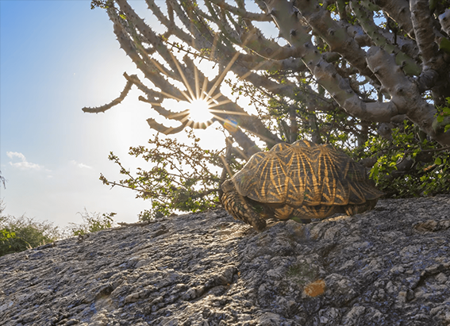

NATIONAL GEOGRAPHIC
Why a Trip to New York is a Rite of Passage
TRAVEL
For a first trip, stick with Manhattan, the classic microcosm of the world. There’s no major influence, theme, subject, attraction, or trend that in some way isn’t touched or reflected in the work, play, creativity, commerce, ingenuity, and world-class chutzpah that unfolds in the canyons of this great urbanity.
Kids, of course, will be dazzled by its sheer striding-of-the-globe personality (adults are too) and delight in what it offers visitors: all those A-list attractions like the Empire State Building; France’s gift to America, the Statue of Liberty; the often overlooked Children’s Museum of Manhattan; and Central Park
And then there’s the “real New York” Katz’s Deli; Wall Street, where New York City began; Grand Central Terminal; the subway that is the city’s true artery; and neighborhoods of Little Italy and Chinatown.
First, dispense with the myth that New Yorkers don’t care about you. “This is not an anonymous city,” says John Keatts, actor and author of Tales of New York. “Someone gets lost, struggles with a map in the subway, and help is there. Every day people tell me how surprised they are that folks are willing to help others. Kids are especially cherished.”
The best way a child can understand Manhattan is to leave it on the Circle Line Cruise. As a New York cabbie would say: “Nothin’ better.”
“This city is great because of the water, because of the ports,” says Keatts, who is also a Circle Line guide. “You see the city differently when you’re on the water. Even New Yorkers say that. Kids are astonished at seeing the city’s broad strokes. It’s like a poor-man’s astronaut view of Earth. On the water you see big sections of the city that you miss walking among buildings.”
Circle Line cruises run year-round. April to October, when outer decks are comfortable, is prime time kids can feel the wind and see the water up close. The three-hour cruise (attention-constrained youngsters can take a two-hour semicircle trip) is a 35-mile circle of the island with a little harbor detour: Downriver from 42nd Street on the west side of the Hudson River, past the Empire State Building, Chelsea, Greenwich Village, into the harbor past Ellis and Liberty Islands; up to the Brooklyn Bridge; then past Wall Street and Midtown (Chrysler and Empire State Buildings); to the mayor’s Gracie Mansion; from the East River into and out of the Harlem River to catch Yankee Stadium; and north into the Hudson to Inwood Hill Park and the George Washington Bridge; then back to the beginning.
This brings home that Manhattan is surrounded by water, but “the biggest comment I get from kids is: ‘Why all these bridges?’ ” says Keatts. “I answer, ‘How do you think Manhattan got its food today?’ Manhattan is an island. A hundred years ago the Brooklyn Bridge was brand-new. Back then, there was no bridge over the Hudson River. The George Washington Bridge wasn’t there until 1931 because it had to cross the widest and deepest spot. Now we have 2,027 bridges in all of New York. The point is the water affects almost everything you do every day.
“The Brooklyn Bridge gets the most questions,” Keatts continues. “We tell people about John Roebling, who had built a bridge over the Ohio River with a new material called steel, a light, strong metal that was relatively inexpensive. He designed the Brooklyn Bridge with steel—you couldn’t build it with iron because it would have been too heavy to support with cables. Today, the bridge seems small, but in 1883 it was almost half again as long as any bridge in the world, the tallest ever in North America. People were terrified because the bridge was so long; they were afraid it would fall down. So Brooklyn and New York hired P. T. Barnum circus elephants to walk across it to prove it wouldn’t. It changed architecture around the world. It was called the eighth wonder of the world. The Empire State Building would not be here without steel, which is true of most buildings in town.”
Keatts suggests you come to the city armed with questions, which is the great currency between parents and kids. He’s used to fielding questions on virtually everything about New York: “What’s the Statue of Liberty made of?” “How many bridges are there?” “What are the water tanks on the Upper West Side?”
Comments :
- john Very good
- john Very good
Leave a Reply
Your email address will not be published. Required fields are marked*
Related posts:
-
 Animal-friendly laws are gaining traction across the U.S.
Animal-friendly laws are gaining traction across the U.S.Late last month, President Joe Biden signed three long-awaited bills into law: a ban on the tiger cub petting and breeding industry, a prohibition on the buying and selling of shark fins, and the FDA Modernization Act 2.0
View article -
 They rely on this lizard to heal their pain. Now it’s endangered.
They rely on this lizard to heal their pain. Now it’s endangered.The six-inch-long reptile, called a jararanko which translates to “lizard” in the Indigenous Aymara language climbs onto a rock, basking in the sunlight. While it’s distracted, Flores leans down and catches it
View article -
These tortoises are in jeopardy as good luck charms. Here's what we know.
A man dressed in a gray t-shirt, black shorts, and a face mask soon approached and introduced himself as “Mr. X.” He didn’t want to use his real name, he said. But he was ready to make a deal. He and his Indian supplier could provide
View article